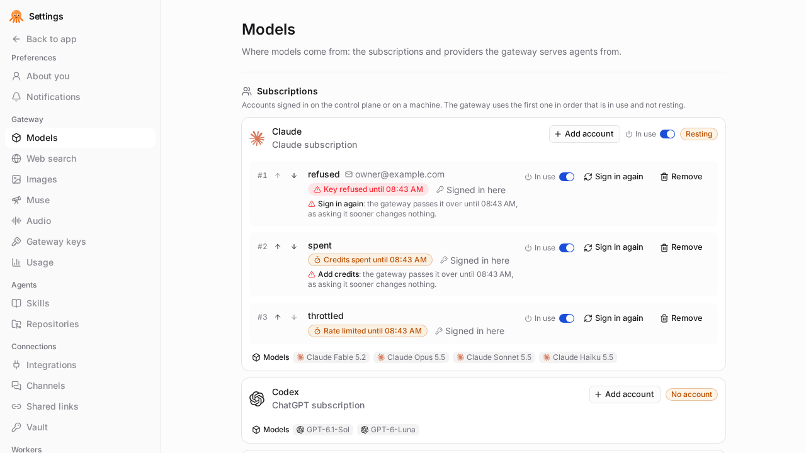
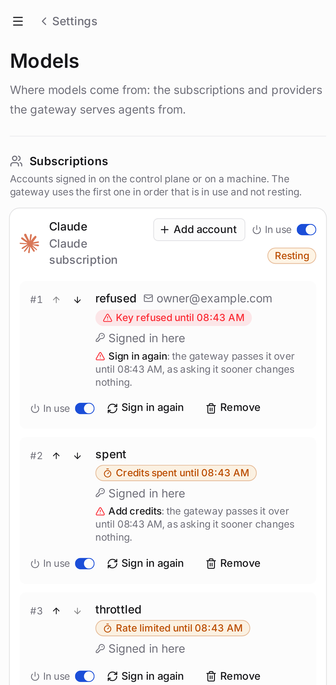
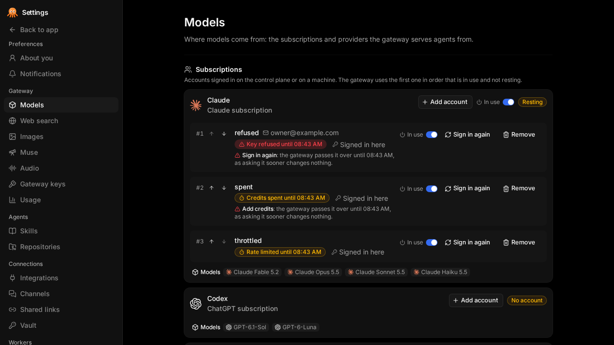
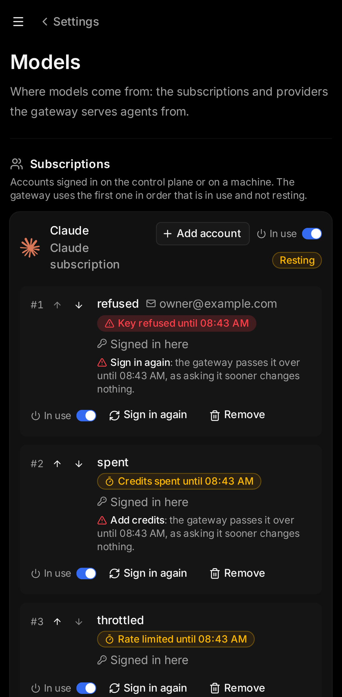

What the owner does to end a rest (#1335)
Settings → Models, the Claude card with three resting accounts: a refused sign-in (auth) says "Sign in again",
spent credits (billing) say "Add credits", each with until when the gateway passes it over (the usage wait, an
hour); a throttle (rate_limit) ends by itself and says nothing more. Taken by web/tests/models.spec.ts,
"an account that only the owner can bring back says what to do".
Light


Dark

